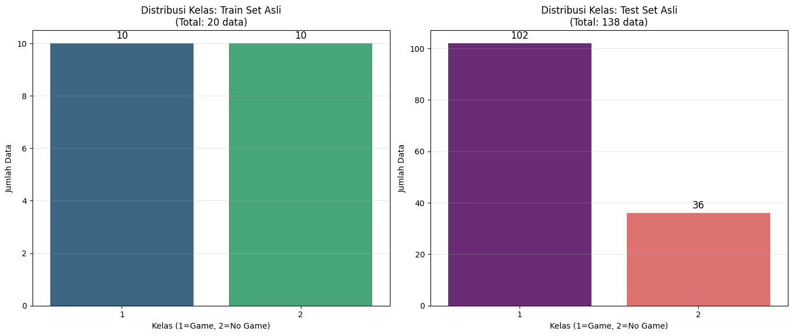
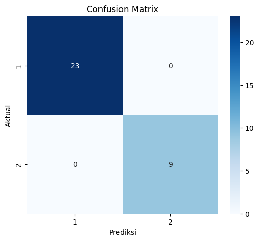

DodgerLoopWeekend#
Business Understanding#
Latar Belakang#
Dataset DodgerLoopWeekend merupakan data time series yang merepresentasikan jumlah kendaraan yang melewati loop detector di sekitar Stadion Dodger pada akhir pekan (weekend).
Tujuan utama klasifikasi ini adalah untuk:
Mengidentifikasi pola lalu lintas
Membedakan kondisi lalu lintas normal dan tidak normal
Mendukung pengambilan keputusan berbasis pola temporal
Tujuan Proyek#
Membangun model klasifikasi time series
Menggunakan algoritma K-Nearest Neighbor dengan Dynamic Time Warping (DTW)
Menyediakan sistem klasifikasi sederhana yang dapat diakses melalui Gradio
Data Understanding#
Deskripsi Dataset#
Dataset DodgerLoopWeekend merupakan dataset time series yang berasal dari UCR Time Series Classification Archive. Dataset ini merepresentasikan jumlah kendaraan yang terdeteksi oleh loop detector di sekitar Stadion Dodger pada akhir pekan (weekend).
Setiap data menggambarkan satu urutan waktu (time series) yang mencerminkan pola lalu lintas dalam interval waktu tertentu.
Tipe Data#
Jenis data : Time Series (univariate)
Tipe nilai : Numerik (float)
Panjang seri : Tetap (fixed-length)
Jumlah instance : Relatif kecil (dataset kecil)
Struktur Data#
Setiap baris data memiliki struktur sebagai berikut:
Kolom ke-1 : Label kelas
Kolom ke-2 s.d terakhir : Nilai time series (T1, T2, T3, …, Tn)
Contoh struktur:
Label |
T1 |
T2 |
T3 |
… |
Tn |
|---|
Kelas (Target)#
Dataset ini merupakan klasifikasi biner, dengan:
Kelas 0 : Pola lalu lintas normal
Kelas 1 : Pola lalu lintas tidak normal / kejadian tertentu
Label disajikan dalam bentuk numerik dan akan digunakan langsung tanpa encoding tambahan.
Distribusi Data#
Jumlah data pada dataset asli:
Data latih (train) sangat terbatas
Data uji (test) lebih banyak Sehingga dilakukan penggabungan data untuk meningkatkan stabilitas model.
import numpy as np
import pandas as pd
import matplotlib.pyplot as plt
import seaborn as sns
from tslearn.datasets import UCR_UEA_datasets
from tslearn.preprocessing import TimeSeriesScalerMinMax
# --- Konfigurasi ---
DATASET_NAME = "DodgerLoopWeekend"
print(f"Sedang memuat dataset {DATASET_NAME}...")
# Menggunakan loader dari tslearn untuk mengambil data UCR secara otomatis
# Jika gagal load online, kamu bisa ganti bagian ini dengan load file lokal
loader = UCR_UEA_datasets()
X_train_org, y_train_org, X_test_org, y_test_org = loader.load_dataset(DATASET_NAME)
print("\n--- Statistik Awal Data Asli (Sebelum Digabung) ---")
print(f"Jumlah Train Asli: {X_train_org.shape[0]}")
print(f"Jumlah Test Asli : {X_test_org.shape[0]}")
print(f"Panjang Series : {X_train_org.shape[1]}")
print(f"Jumlah Channel : {X_train_org.shape[2]} (Univariate)")
# --- Analisis Kelas dan Tipe Data ---
unique_classes, counts = np.unique(y_train_org, return_counts=True)
print(f"\nKelas yang tersedia: {unique_classes}")
# Biasanya kelas 1 = Game, 2 = No Game (atau sebaliknya, kita perlu cek dokumentasi/visualisasi)
# Visualisasi Data Mentah
# Mencari index pertama yang mewakili masing-masing kelas untuk sampel
idx_class_1 = np.where(y_train_org == 1)[0][0]
idx_class_2 = np.where(y_train_org == 2)[0][0]
# Ukuran diperlebar lagi (24, 6) agar muat 4 plot dengan jelas
plt.figure(figsize=(24, 6))
# Plot 1: Contoh Waveform Kelas 1
plt.subplot(1, 4, 1)
plt.plot(X_train_org[idx_class_1].ravel(), color='blue')
plt.title(f"Contoh Waveform (Kelas 1)\nIndex: {idx_class_1}")
plt.xlabel("Waktu")
plt.ylabel("Volume Kendaraan")
plt.grid(True, alpha=0.3)
# Plot 2: Contoh Waveform Kelas 2
plt.subplot(1, 4, 2)
plt.plot(X_train_org[idx_class_2].ravel(), color='orange')
plt.title(f"Contoh Waveform (Kelas 2)\nIndex: {idx_class_2}")
plt.xlabel("Waktu")
plt.grid(True, alpha=0.3)
plt.tight_layout()
plt.show()
---------------------------------------------------------------------------
ModuleNotFoundError Traceback (most recent call last)
Cell In[1], line 5
3 import matplotlib.pyplot as plt
4 import seaborn as sns
----> 5 from tslearn.datasets import UCR_UEA_datasets
6 from tslearn.preprocessing import TimeSeriesScalerMinMax
8 # --- Konfigurasi ---
ModuleNotFoundError: No module named 'tslearn'
# --- VISUALISASI DISTRIBUSI KELAS (DATA UNDERSTANDING) ---
plt.figure(figsize=(14, 6))
# Plot 1: Distribusi Kelas pada Data TRAIN Asli
plt.subplot(1, 2, 1)
ax1 = sns.countplot(x=y_train_org, palette="viridis")
plt.title(f"Distribusi Kelas: Train Set Asli\n(Total: {len(y_train_org)} data)")
plt.xlabel("Kelas (1=Game, 2=No Game)")
plt.ylabel("Jumlah Data")
plt.grid(axis='y', alpha=0.3)
# Menambahkan angka di atas batang
for container in ax1.containers:
ax1.bar_label(container, fmt='%d', padding=3, fontsize=12)
# Plot 2: Distribusi Kelas pada Data TEST Asli
plt.subplot(1, 2, 2)
ax2 = sns.countplot(x=y_test_org, palette="magma")
plt.title(f"Distribusi Kelas: Test Set Asli\n(Total: {len(y_test_org)} data)")
plt.xlabel("Kelas (1=Game, 2=No Game)")
plt.ylabel("Jumlah Data")
plt.grid(axis='y', alpha=0.3)
# Menambahkan angka di atas batang
for container in ax2.containers:
ax2.bar_label(container, fmt='%d', padding=3, fontsize=12)
plt.tight_layout()
plt.show()

Data Preparation#
Di sini kita melakukan preprocessing: penanganan missing values, outlier, normalisasi, dan pembagian data (splitting) sesuai rasio yang kamu minta (70% Train, 20% Test, 10% Implementasi).
from sklearn.model_selection import train_test_split
from tslearn.preprocessing import TimeSeriesResampler
# 1. PENGGABUNGAN DATA (Merge)
X_total = np.concatenate((X_train_org, X_test_org), axis=0)
y_total = np.concatenate((y_train_org, y_test_org), axis=0)
print(f"Total Data setelah digabung: {X_total.shape[0]}")
# 2. PENANGANAN MISSING VALUES (Imputasi)
# Cek apakah ada NaN
if np.isnan(X_total).any():
print("Ditemukan Missing Values. Melakukan interpolasi...")
from tslearn.preprocessing import TimeSeriesImputer
X_total = TimeSeriesImputer(method="linear").fit_transform(X_total)
else:
print("Tidak ada Missing Values.")
# 3. PENANGANAN OUTLIER SEDERHANA
# Kita cek jika ada data yang nilainya ekstrem (misal z-score > 3).
# Namun pada time series pendek, menghapus baris bisa mengurangi data drastis.
# Kita hanya akan membersihkan jika ada nilai yang benar-benar rusak (misal flat line 0 semua).
valid_indices = []
for i in range(len(X_total)):
# Hapus jika standar deviasi 0 (data flat/rusak)
if np.std(X_total[i]) > 0:
valid_indices.append(i)
X_total = X_total[valid_indices]
y_total = y_total[valid_indices]
print(f"Data valid setelah cleaning sederhana: {len(X_total)}")
# 4. BALANCING DATA (Cek Keseimbangan)
u, c = np.unique(y_total, return_counts=True)
print(f"Distribusi Kelas Total: {dict(zip(u, c))}")
# Jika sangat tidak seimbang, kita bisa menggunakan class_weight saat training,
# tapi KNN standar tidak support class_weight secara native di sklearn/tslearn tanpa custom metric.
# Karena dataset ini biasanya cukup balance atau selisih dikit, kita lanjutkan dengan stratify split.
# 5. NORMALISASI (Scaling)
# KNN sangat sensitif terhadap skala, jadi kita ubah range ke 0-1
scaler = TimeSeriesScalerMinMax()
X_total_scaled = scaler.fit_transform(X_total)
# 6. SPLITTING DATA (70% Train, 20% Test, 10% Deploy)
# Strategi: Ambil 10% dulu untuk Deploy, sisa 90% dibagi lagi.
# Split 1: Pisahkan 10% untuk Implementasi (Deploy)
X_temp, X_deploy, y_temp, y_deploy = train_test_split(
X_total_scaled, y_total,
test_size=0.10,
random_state=42,
stratify=y_total # Penting agar proporsi kelas terjaga
)
# Hitung sisa persentase untuk mendapatkan 70% total dan 20% total
# Sisa data adalah 90%.
# Train butuh 70% total -> 70/90 dari sisa.
# Test butuh 20% total -> 20/90 dari sisa.
ratio_test_from_temp = 0.20 / 0.90
# Split 2: Pisahkan Sisa (Temp) menjadi Train dan Test
X_train, X_test, y_train, y_test = train_test_split(
X_temp, y_temp,
test_size=ratio_test_from_temp,
random_state=42,
stratify=y_temp
)
print("\n--- Hasil Pembagian Data ---")
print(f"Train Set (70%) : {X_train.shape}")
print(f"Test Set (20%) : {X_test.shape}")
print(f"Deploy Set (10%) : {X_deploy.shape} (Disimpan untuk demo Gradio)")
Total Data setelah digabung: 158
Ditemukan Missing Values. Melakukan interpolasi...
Data valid setelah cleaning sederhana: 158
Distribusi Kelas Total: {np.int64(1): np.int64(112), np.int64(2): np.int64(46)}
--- Hasil Pembagian Data ---
Train Set (70%) : (110, 288, 1)
Test Set (20%) : (32, 288, 1)
Deploy Set (10%) : (16, 288, 1) (Disimpan untuk demo Gradio)
Modelling#
Kita menggunakan algoritma k-Nearest Neighbors (k-NN) dengan metrik jarak Dynamic Time Warping (DTW). DTW dipilih karena lebih tahan terhadap pergeseran waktu (time shift) dibandingkan Euclidean distance biasa, yang sangat penting untuk data lalu lintas.
from tslearn.neighbors import KNeighborsTimeSeriesClassifier
# Setup Model
# n_neighbors=3 adalah standar awal yang baik untuk dataset kecil
# metric='dtw' adalah kunci dari time series classification
knn_dtw = KNeighborsTimeSeriesClassifier(n_neighbors=3, metric="dtw")
print("Sedang melatih model KNN-DTW... (Mungkin memakan waktu tergantung data)")
knn_dtw.fit(X_train, y_train)
print("Pelatihan selesai.")
Sedang melatih model KNN-DTW... (Mungkin memakan waktu tergantung data)
Pelatihan selesai.
Evaluasi#
from sklearn.metrics import classification_report, confusion_matrix, accuracy_score
import seaborn as sns
# Prediksi data test
y_pred = knn_dtw.predict(X_test)
# Hitung Akurasi
acc = accuracy_score(y_test, y_pred)
print(f"Akurasi Model pada Data Test: {acc:.2f} ({acc*100:.2f}%)")
# Classification Report
print("\n--- Laporan Klasifikasi ---")
print(classification_report(y_test, y_pred))
# Confusion Matrix
cm = confusion_matrix(y_test, y_pred)
plt.figure(figsize=(6, 5))
sns.heatmap(cm, annot=True, fmt='d', cmap='Blues', xticklabels=unique_classes, yticklabels=unique_classes)
plt.title("Confusion Matrix")
plt.xlabel("Prediksi")
plt.ylabel("Aktual")
plt.show()
# - (Ini adalah placeholder tag, gambar akan dihasilkan oleh kode di atas)
Akurasi Model pada Data Test: 1.00 (100.00%)
--- Laporan Klasifikasi ---
precision recall f1-score support
1 1.00 1.00 1.00 23
2 1.00 1.00 1.00 9
accuracy 1.00 32
macro avg 1.00 1.00 1.00 32
weighted avg 1.00 1.00 1.00 32

Deployment#
Kita akan menggunakan Gradio untuk membuat antarmuka web sederhana. Karena inputnya berupa deret angka (time series), kita akan membuat fitur dimana user bisa memilih “Contoh Data” dari simpanan data Deploy (10%) atau memasukkan angka secara manual.
https://huggingface.co/spaces/itssreii/dodgerloopweekend
import gradio as gr
import matplotlib.pyplot as plt
import re # Import modul Regex untuk pemisahan teks yang lebih canggih
# --- FUNGSI KLASIFIKASI SUPER FLEKSIBEL ---
def classify_traffic(input_text, use_example_idx):
try:
data_to_predict = None
input_source = ""
actual_label = "-"
# 1. Cek Input Manual Terlebih Dahulu
if input_text is not None and input_text.strip() != "":
try:
# --- LOGIKA BARU: MEMISAHKAN ANGKA ---
# re.split akan memotong teks berdasarkan:
# [,\s\n]+ --> Koma, Spasi, atau Enter (Newline)
# input_text.strip() untuk buang spasi di awal/akhir
raw_values = re.split(r'[,\s\n\t]+', input_text.strip())
# Filter: Hapus string kosong jika ada (akibat spasi ganda dsb)
values = [float(x) for x in raw_values if x != ""]
if len(values) == 0:
return "Error: Tidak ada angka yang terbaca.", None
# Reshape ke format model (Batch, Length, Channel)
data_arr = np.array(values).reshape(1, -1, 1)
data_to_predict = data_arr
actual_label = "Tidak diketahui (Input Manual)"
input_source = "Input Manual (Fleksibel)"
except ValueError:
return "Error: Input mengandung huruf atau simbol yang bukan angka.", None
# 2. Jika Input Manual kosong, Cek Index
elif use_example_idx is not None:
idx = int(use_example_idx)
if idx < 0 or idx >= len(X_deploy):
return f"Error: Index {idx} di luar jangkauan (0 - {len(X_deploy)-1}).", None
data_to_predict = X_deploy[idx].reshape(1, -1, 1)
actual_label = str(y_deploy[idx])
input_source = f"Data Implementasi Index ke-{idx}"
else:
return "Mohon isi Input Manual atau Pilih Index.", None
# --- Lakukan Prediksi ---
prediction = knn_dtw.predict(data_to_predict)[0]
# --- Plotting ---
fig = plt.figure(figsize=(10, 4))
plt.plot(data_to_predict[0].ravel(), color='blue', label='Input Series')
plt.title(f"Waveform Input\nPrediksi Model: KELAS {prediction}")
plt.xlabel("Waktu")
plt.ylabel("Volume")
plt.grid(True, alpha=0.3)
plt.legend()
plt.tight_layout()
plot_path = "prediction_plot_flex.png"
plt.savefig(plot_path)
plt.close()
result_text = (
f"Sumber Data: {input_source}\n"
f"Panjang Data: {data_to_predict.shape[1]} titik waktu\n"
f"Label Asli (jika ada): {actual_label}\n"
f"----------------------------------\n"
f"HASIL PREDIKSI: KELAS {prediction}\n"
)
return result_text, plot_path
except Exception as e:
return f"System Error: {str(e)}", None
# --- ANTARMUKA GRADIO ---
with gr.Blocks() as demo:
gr.Markdown("# Klasifikasi Time Series: DodgerLoopWeekend")
with gr.Row():
with gr.Column():
inp_text = gr.Textbox(
label="1. Input Manual (Bebas Format: Spasi/Koma/Enter)",
placeholder="Paste data angka di sini...",
lines=8
)
inp_idx = gr.Number(
label="2. Atau Gunakan Index Data Deploy",
value=None,
precision=0
)
btn = gr.Button("Prediksi", variant="primary")
with gr.Column():
out_text = gr.Textbox(label="Hasil Analisis")
out_plot = gr.Image(label="Visualisasi Sinyal")
btn.click(fn=classify_traffic, inputs=[inp_text, inp_idx], outputs=[out_text, out_plot])
print("Menjalankan Gradio...")
demo.launch()
Menjalankan Gradio...
* Running on local URL: http://127.0.0.1:7865
* To create a public link, set `share=True` in `launch()`.